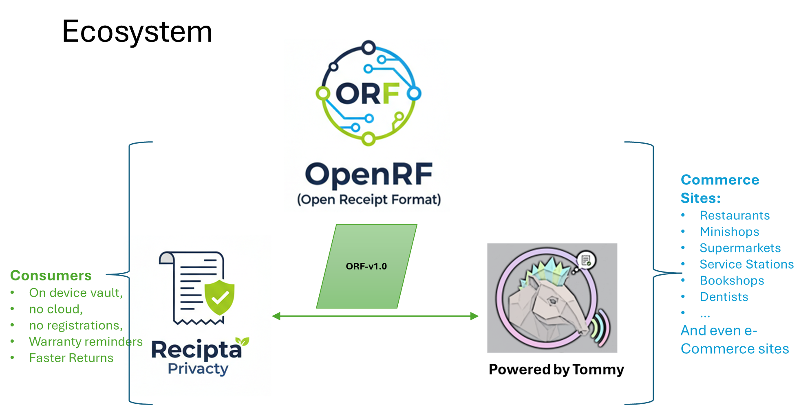
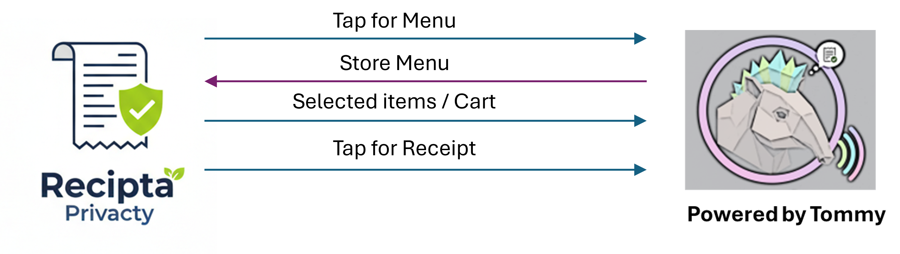

What is Recipta?
Recipta is an open-source, local-first receipt vault designed to store, manage, and analyze digital receipts that conform to the Open Receipt Format (ORF).
All receipts are stored on the user's device.
There is no cloud sync by default.
Recipta exists to give individuals long-term, private access to their receipts — independent of merchants, email inboxes, or platforms.
ORF Ecosystem

Core Principles
1. Local-Only by Default
- Receipts are stored on-device
- No background uploads
- No third-party analytics
- No account required
Cloud sync or export is explicitly opt-in and user-controlled.
2. ORF-Native Storage
Recipta stores receipts as:
- Canonical ORF JSON
- Optional rendered views (HTML / PDF)
This ensures portability, longevity, and vendor independence.
3. Claim-Based Ingestion
Recipta does not scrape inboxes or intercept payments.
Receipts enter Recipta via:
- NFC / QR receipt claims (e.g. from Tommy the Tapir)
- Receipt URLs
- File import (ORF JSON)
The user always initiates ingestion.
Relationship to Other Projects
Open Receipt Format (ORF)
- ORF defines the receipt data model
- Recipta consumes ORF receipts without modification
- Recipta does not extend or alter the ORF schema
Tommy the Tapir
- Tommy is a reference framework for issuing and claiming receipts
- Recipta is a reference application for storing and using them
- Either can be used independently
What Recipta Can Do
Receipt Management
- View and search receipts
- Filter by:
- Merchant
- Date range
- Amount
- Category
- Validate ORF conformance
Analysis (User-Initiated)
- Generate expense summaries
- Create budget journals
- Produce exportable reports
AI-Assisted Insights (Optional)
If explicitly enabled by the user, Recipta can:
- Analyze receipts locally or via user-approved AI services
- Generate:
- Expense reports
- Spending insights
- Period summaries
No receipt data is shared without consent.
What Recipta Does Not Do
- No payment processing
- No bank integration
- No automatic cloud backups
- No merchant tracking
- No advertising
- No data resale
Recipta is a personal data tool, not a platform.
High-Level Architecture

All operations occur on-device unless explicitly authorized.
Core Design Principles
Local-First
All receipts are stored and processed locally by default. Network access is optional and explicit.
Payment-Agnostic
Payment confirmation is external. Receipts may be asserted, confirmed, or verified independently of payment rails.
POS-Optional
POS integration is opportunistic, not assumed. Human confirmation is a first-class verification mechanism.
Event-Driven
Recipta emits structured events that other apps may subscribe to. Recipta is not a data silo.
Receipt Lifecycle
Recipta recognizes three receipt states: Draft → Confirmed → Verified
- Draft: Generated before payment or confirmation. Useful for expense planning, audit trails.
- Confirmed: Explicitly acknowledged by cashier or system. Mirrors paper receipt authority.
- Verified: Cryptographically signed or cross-checked. Optional, not required.
Receipt Transport Mechanisms
- QR Codes: Most universal, suitable for inline ORF or receipt claims
- NFC: Tap-based convenience, payload size limited, typically carries receipt claims
- Web Links: Online commerce, progressive enhancement
POS Vendor Integration Reality
| Reality | Implication |
|---|---|
| APIs are vendor-locked | ORF cannot depend on them |
| Auth required | Not consumer-accessible |
| Legacy systems exist | Human confirmation required |
| Receipt ≠ payment | Receipt must stand alone |
Conclusion: Recipta and ORF treat the receipt as an assertion, not a database extraction.
Privacy Model
- All receipt data belongs to the user
- Analysis is pull-based, not push-based
- Exports are:
- Time-bound
- Filtered
- Revocable
Recipta minimum data movement.
Project Status
Recipta is an early-stage reference application.
Current focus:
- Storage model
- ORF ingestion
- Privacy guarantees
- Analysis workflows
Implementation details will evolve as interfaces stabilize.
Contributing
Recipta welcomes contributions from:
- Privacy engineers
- Mobile developers
- UX designers
- Standards contributors
Design discussion is encouraged before major implementation work.